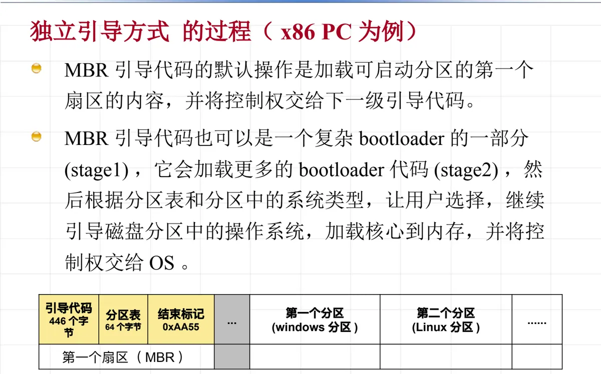

操作系统原理 · 第 3 章 用户接口
3.1 用户工作环境
从这一节起进入「用户接口」这一章。用户要使用计算机，先得有一个可用的工作环境——一台机器从裸机变成能登录、能敲命令的系统，中间要经过系统生成、系统启动、系统引导三道工序；环境建好之后，用户才谈得上通过命令接口或编程接口使用它。这一节先讲环境是怎么建起来的，再以 Linux 命令行为例看看环境建成后用户面对什么。
1. 用户工作环境包含哪些内容
用户使用计算机的环境，指的是设计合理的操作方式和命令，使用户能够方便地通过操作系统使用计算机。它包含三方面的工作：
- 提供各种软、硬件资源；
- 设计操作系统的用户接口，也就是命令集。它又分三种形式：键盘命令操作（命令接口）、图形界面操作（命令接口）、系统调用接口（编程接口）；
- 激活系统、提供服务——这主要针对多用户环境下的分时系统。
按这个顺序，下面依次看系统生成、系统启动、系统引导，最后看系统投入使用后用户面对的命令集合。
2. 系统生成
系统生成是指在一台裸机上安装操作系统的过程，目的是准备好用户工作环境。一般情况下，这项工作由系统程序员来完成：系统生成过程中要涉及机器的硬件配置和操作系统核心参数的设置，还会涉及软件系统的版权问题。
对个人计算机 PC 来说，系统生成就是用户自己安装一套操作系统：常见的是 Microsoft Windows，或者某个 Linux 发行版（Ubuntu、Fedora，乃至从零构建的 LFS，即 Linux From Scratch）。
3. 系统启动
系统启动指的是把操作系统从存储设备装入主存并让它运行起来。这一步由谁来做，取决于机器的规模：对大、中、小型计算机来说，系统启动的工作由系统程序员（或系统管理员）完成；对个人计算机 x86 PC 来说，则由用户自己完成。
4. 系统引导的两种方式
操作系统核心文件放在哪里、由谁把它装进主存，决定了引导方式分为两类。
（1）现场独立引导方式（滚雪球方式）
操作系统的核心文件存储在系统本身的存储设备中，由系统自己把 OS 核心程序读入主存并运行，从而建立一个操作环境。这种方式适用于微机和大多数系统。
（2）辅助下装方式
操作系统的主要文件不放在系统本身的存储设备中，而是在系统启动后执行下装操作，从另外的计算机系统中把操作系统的常驻部分传送到本机，使它形成一个操作环境。这种方式适用于无盘工作站、网络计算机及分布式系统，常见的技术手段有网卡的 PXE 模式、网络文件系统 NFS、CIFS（samba）。
5. 独立引导方式的过程（以 x86 PC 为例）
独立引导方式之所以又叫「滚雪球」，是因为一小段代码加载更大一段代码、逐级把 OS 拉起来。以 x86 PC 为例，过程如下：
- （1）系统加电，自动跳转到内存地址 FFFF:0000 处执行，该地址位于主板 BIOS 只读存储器；
- （2）BIOS 执行系统硬件和配置的检测，保证系统没有硬件错误；
- （3）如果从硬盘启动，读入启动硬盘的第一个扇区内容（MBR）。如果它以 0xAA55 结束，则认为它是一个引导扇区（Boot Sector）——引导扇区共 512 字节，包括 446 字节的引导代码和 64 字节的分区表；
- （4）BIOS 将引导扇区加载到内存 0000:7C00 位置，然后跳转到该内存地址运行引导代码；
- （5）MBR 引导代码的默认操作是加载可启动分区的第一个扇区的内容，并把控制权交给下一级引导代码；
- （6）MBR 引导代码也可以是一个复杂 bootloader 的一部分（stage1），它会加载更多的 bootloader 代码（stage2），然后根据分区表和分区中的系统类型让用户选择，继续引导磁盘分区中的操作系统，把核心加载到内存，并将控制权交给 OS。

上面第（6）步提到的 bootloader 是引导过程中的关键部件，常见的实现有：lilo、grub、ntldr、syslinux（含 extlinux、pxelinux、isolinux）、uboot。
6. Linux 系统的启动
Linux 的启动过程是独立引导方式的一个具体实例。核心镜像 vmlinuz 经过自解压得到 vmlinux（位于 arch/x86/boot/compressed/），其间由 Setup.S、Head.S 等汇编代码完成最初的准备工作，随后进入用 C 语言写的 Start_kernel()。内核初始化要依次完成这些事：
- 对与 CPU、内存等最基本硬件相关的部分进行初始化；
- 对中断向量表进行初始化；
- 为进程调度程序作准备；
- 设置基准时钟；
- 内核的内存分配；
- 对文件系统进行初始化；
- 建立 init 进程（以 root 身份启动后台服务）。
init 进程接着为每一个联机终端建立 getty 进程，getty 在终端上显示 login：，等待用户登录；用户输入用户名和密码并验证通过后，就可以开始使用操作系统了。
这里已经埋下了后面几章的伏笔：中断向量表的初始化对应第 2 章讲的中断机制，进程调度的准备和 init 进程的建立则是第 4 章「进程及进程管理」的主题。
7. 系统使用：Linux 命令行
系统启动完成后，用户面对的是操作系统的各项资源管理功能，它们都可以通过命令来操作：进程管理、内存管理、设备管理（字符设备、块设备、网络设备；存储设备、网卡、输入设备、声卡、显卡……）以及文件系统。UNIX/Linux 的设计思想是一切皆是文件——正因为如此，下面这些针对文件和目录的命令才能覆盖绝大部分日常操作。
（1）文件和目录的常用操作命令
- 创建：
mkdir、touch等； - 查看：
cd、pwd、du、ls； - 拷贝／移动：
cp、mv； - 删除：
rm； - 权限修改：
chmod、chown； - 文件读写：编辑器（
vi、gedit、geany等）； - 打包文件：
tar； - 查找文件：
find、grep。
（2）其他常用命令与数据流
文件内容的处理还有一批工具命令：cat、sort、uniq、wc，以及按行逆序的 tac、按字符逆序的 rev，还有识别文件类型的 file。
更重要的是，命令行把输入输出也统一成了数据流：重定向 > 和管道 | 用来在命令之间搬运数据；每个进程默认带有三个标准通道——标准输入（0）、标准输出（1）、错误输出（2）。
除了文件，其他系统资源也通过文件的方式获取信息：系统进程、内存和设备的信息都可以用文件的形式读到，再配合一些常用辅助命令查看，如 ps、kill、top、free。
本节小结
- 用户工作环境要做三件事：提供软硬件资源、设计用户接口（键盘命令、图形界面、系统调用接口）、激活系统提供服务。
- 系统生成是在裸机上安装操作系统、准备用户工作环境的过程，涉及硬件配置与核心参数设置；系统启动在大中型机上由系统程序员或系统管理员完成，在 x86 PC 上由用户自己完成。
- 系统引导分现场独立引导方式（滚雪球方式，核心文件在本机，适用于微机和大多数系统）和辅助下装方式（核心文件在别的机器上，适用于无盘工作站、网络计算机与分布式系统，靠 PXE、NFS、CIFS 等下装）。
- x86 PC 的独立引导过程：加电跳转到 FFFF:0000 的 BIOS → 检测硬件 → 读 MBR 引导扇区（512 字节，以 0xAA55 结束）并加载到 0000:7C00 → 逐级交给 bootloader，最后把操作系统核心装入主存。
- Linux 启动由 vmlinuz 自解压为 vmlinux、进入 Start_kernel() 初始化，最终建立 init 进程；init 为每个终端建立 getty，等待用户登录。
- Linux 命令行体现「一切皆是文件」的设计思想：文件和目录操作用 mkdir、cp、rm、chmod、tar、find 等命令完成，输入输出用重定向与管道串成数据流，标准输入、标准输出、错误输出分别对应 0、1、2。